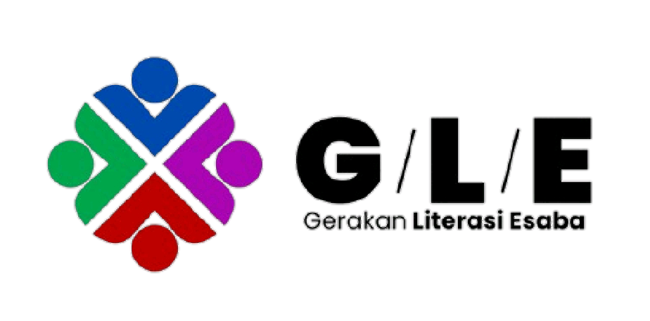

BELAJAR DARI RESIDU SAMPAH, JADI MEDIA YANG BERMAKNA!
PHYGITAL LEARNING: PERPADUAN MEDIA FISIK DAN DIGITAL!
Pilih media dan tahap belajar yang kamu butuhkan.
Berkolaborasi dengan sesama pelajar.
Panduan langkah demi langkah litnum.
Materi interaktif yang menarik.
Evaluasi belajar lewat permainan yang seru.
Inspirasi dari karya teman.
Latihan intensif persiapan ujian.
Evaluasi dan catat progresmu.
Bacaan pendek untuk melatih literasi. Klik untuk membaca.